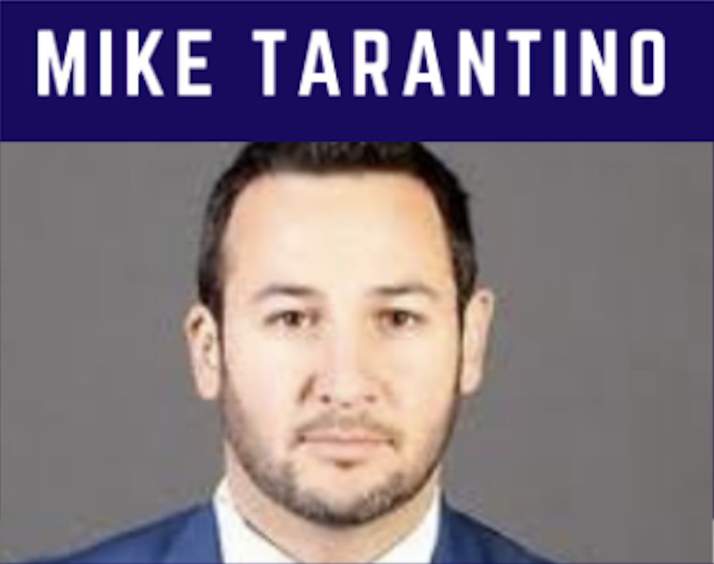

<div>
    <table style="border-style: none;">
        <tr>
            <td>
            </td>
            <td>
                <div style="font-family: Arial; font-size: 18px; color: rgb(54, 96, 146);">
                    <p>Mike Tarantino is a former NCAA player at the Rochester Institute of Technology (RIT) in the
                        NCAA.</p>

                    <p>As a coach, Mike has coached the Mississauga Reps Midget team, was the General Manager of the
                        Toronto Patriots, and named the OJHL Executive of the Year in 2014. In 2018-2019, Mike was the
                        Head Coach for the Oakville Blades.</p>

                    <p>Mike has helped numerous players move on to the OHL, NCAA, and USports. He has coached 4 players
                        who have been drafted to the NHL from the OHJL.</p>

                    <p>He was named OJHL Coach of the Year in 2019. In 2019-2020, Mike served as the Vice-President of
                        Hockey Operations for the Oakville Blades. In spring of 2020, Mike was named General Manager of
                        the Collingwood Blues of the OJHL.</p>

                    <!-- <a href="" target="_"> </a> -->
                </div>
            </td>
        </tr>

    </table>

</div>